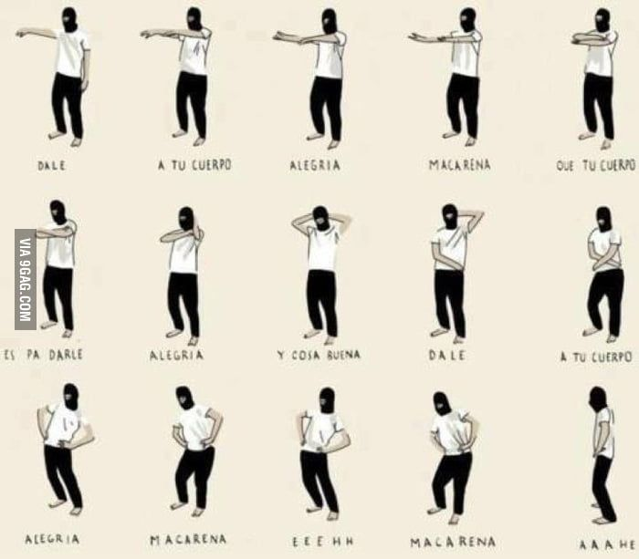

1. Arms out
Right arm, then left, palms facing down.
Fourteen counts of arm movements and a quarter turn, which somehow became the most-performed dance on earth.

Los del Río, a Sevillian duo who had been working since the 1960s, recorded Macarena in 1993 after an improvised couplet at a party in Venezuela. The original is a rumba; the version that conquered the world was a 1995 remix that added a four-on-the-floor kick and an English vocal the original singers had nothing to do with.
The choreography is almost aggressively simple: both arms out, palms down, palms up, crossed to the opposite shoulder, hands behind the head, hands to the hips, hip roll, jump a quarter turn, repeat facing a new wall. It takes about ninety seconds to learn and nobody ever forgets it.
By 1996 it had been performed at the Democratic National Convention, at baseball stadiums between innings, and at essentially every wedding in the Northern Hemisphere. It sat at number one on the Billboard Hot 100 for fourteen weeks.
Right arm, then left, palms facing down.
Palms up, then each hand to the opposite shoulder.
Hands behind the head, then down to the hips.
Hip roll, jump a quarter turn, start again.